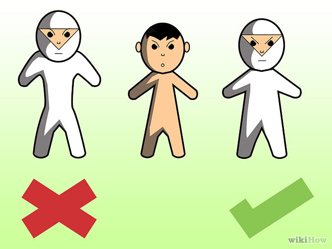
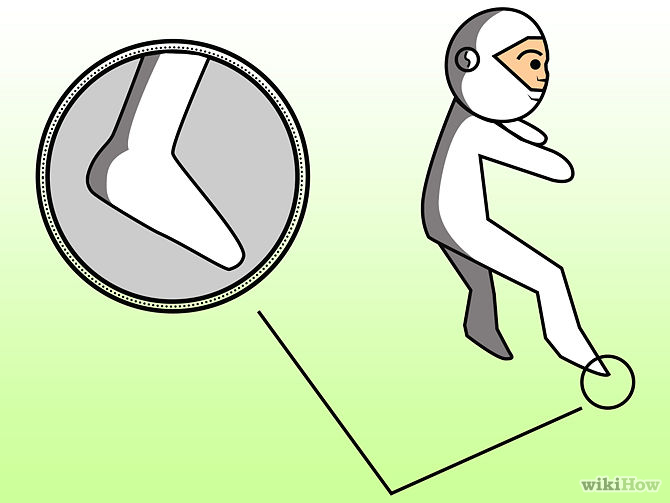
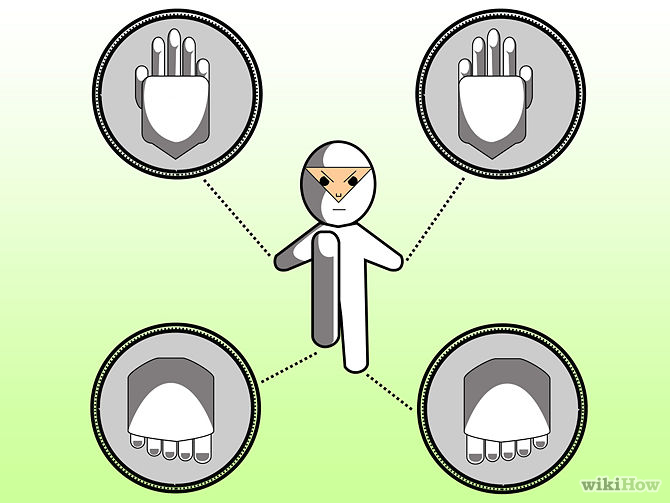
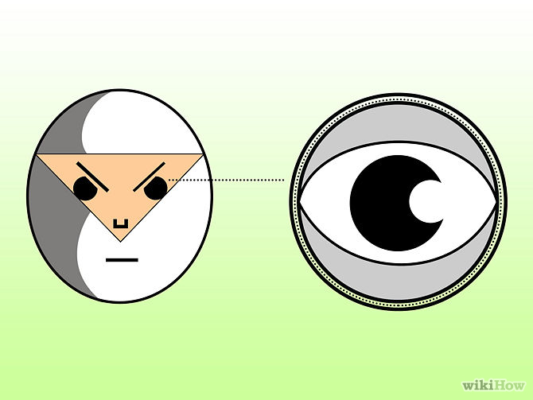
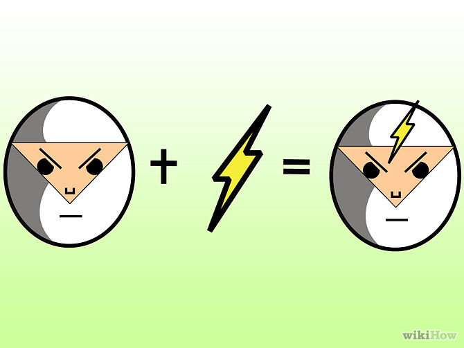

How to be a Ninja
This is how to train to become a ninja. To become a ninja, you must train hard and you can, if you want, follow these steps.
7 Simple Steps
-

Don't allow yourself to get too large. You must not have big muscles. You will become heavy and reduce your agility. A ninja must be agile. Try having muscles as the size of Bruce Lee's. They will give the strength but you can still be light and therefore escape out of tight situations quicker and more easily.
-

Develop your stealth. Stealth is one of the most essential qualities a ninja must have. A ninja is meant to be a "master spy" and will require some stealth skills. Try to sneak around the house at night being as quiet as possible! Use the outside blade to walk around. This means the outer part of your foot.
-

Learn Taijutsu/Ninjitsu. Taijutsu/Ninjitsu is also another essential skill. You are not a ninja until you learn how to fight using only your hands and feet. Everyday, try to balance on something that is hard to balance on. Take some kung fu classes and then use some of your techniques while you are balancing.
-

Develop Sharingan. Sharingan is a master technique. It simply mean that your eyes being quick enough to see the movements made by your opponent and having great reflexes, being able to block and parry. You can master Sharingan (360 vision) by simply practising blocking and staying on your toes. Move your hand up and down a LITTLE. This can improve your reflexes by up to 10%.
-

Be quick on your mental feet. Thinking quick to get out of situations is vital for a ninja! When a ninja is trapped in a very bad situation, he or she has to be very observant and knowledgeable to find a way to sort it out. He should use things that are around him too, and also to try anything at his disposal. Try think of many different ways to sort out a problem. Remember what you know and how it might be able to help you.
Tips
-
Try your best.
-
Try not to get caught.
-
Have control over your emotions.
Back to Top